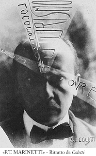

Il fondatore del futurismo nasce nel 1876 ad Alessandria d'Egitto. Nel 1888 entra in collegio di gesuiti francesi. Nel 1893 si trasferisce a Parigi dove perfeziona gli studi e ottiene il baccalaureato in lettere, ma, invece di dedicarsi subito alla letteratura, segue il volere del padre, grande avvocato commercialista, e si laurea in legge all'Università di Genova nel 1899.
Nella vita di tutti i giorni mostra sempre una gentilezza squisita: la sua violenza, il gusto dello scandolo, l'esibizionismo, appaiono in questa luce come qualcosa di voluto, di mediato da ragioni più profonde. Il primo successo letterario gli viene da un poemetto in versi liberi "Le vieux marins" (1898). Nel 1902 Marinetti pubblica in francese il suo primo libro, il pema epico "La conquete des étoiles". Nel 1905 segue la tragedia "ilare", "Roi Bombance", intrisa di un profondo pessimismo sociale e, sempre nello stesso anno Marinetti fonda a Milano con Sem Benelli e Vitaliano Ponti la rivista internazionale "Poesia".
Il Futurismo nasce per un atto di volontarismo estremo: si tratta di inventare una nuova formula, una letterature nuova, adatta ai tempi nuovi. Al Risorgimento politico doveva far seguito un risorgimento letterario e artistico. Marinetti lancia il "Manifesto del Futurismo" da "Le Figaro" di Parigi il 20 febbraio 1909. Sceglie il foglio parigino e la lingua francese per rivolgersi ad un più vasto pubblico. Nel giro di qualche anno Marinetti inventa, letteralmente, il prototipo dell'avanguardia storica, che verrà poi seguito da Dada e dal Surrealismo. Il Futurismo è in questo senso il primo autentico movimento d'avanguardia: gruppo fondato sulla tendenziale affinità elettiva dei componenti e provvisto di un'ideologia globale, artistica ed extrartistica, abbracciante tutti i settori dell'esperienza, dall'arte alla politica, dalla morale al costume.
Come teorico e polemista, Marinetti eccelle in quella che egli stesso definisce "l'arte di fare manifesti". Nelle sue mani il "manifesto" si trasforma: da esposizione più o meno pacata e brillante di idee letterarie o altro, diviene un testo incandescente, terroristico, dotato di valenze spesso paradossali e simboliche. Imponente e prestigiosa è la serie di manifesti marinettiani: da quello di "fondazione", a "Uccidiamo il chiaro di luna!", dai "manifesti tecnici" in cui si enuncia la teoria delle parole in libertà a quello, scintillante di brio e di invenzioni sul "Teatro di varietà", ecc.
All'estensore dei manifesti va affiancato il Marinetti polemista e lo scrittore politico. La dimensione politica è insita, fin dall'inizio, nell'ideologia del movimento. Di fatto Marinetti e altri futuristi collaborano attivamente al fascismo delle origini. Ma già nel '20, al Secondo Congresso di Milano, Marinetti esce dai Fasci sbattendo la porta perchè non vengono accolte le loro pregiudiziali antimonarchica e anticlerivìcale. Ma più in profondità è l'elemento anarchico, antigerarchico, a separare i futuristi dai fascisti, come appare alla lettura delle due principali opere politiche di Marinetti: "Democrazia futurista" (1919) e "Al di là del comunismo" (1920). Certo verso il '23-'24, Marinetti rientra in seno al fascismo e nel '29 diviene accademico d'Italia: ma nell'insieme si può asserire che Marinetti e il futurismo siano stati più tollerati che sostenuti dal regime.
Per quanto riguarda Marinetti come scrittore creativo, le due composizioni più strettamente parolibere sono: "Battaglia Peso + Odore" (1912) e "Zang Tumb Tumb" (1914), documenti letterari importantissimi, ma scarsi di vera sostanza poetica. Subito, a partire dal "romanzo esplosivo", "Otto anime in una bomba" (1919), Marinetti usa la sua stessa teoria come un'impalcatura, un sostegno per una più complessa costruzione letteraria.
Convinto dell'utilità della guerra, partecipa ai conflitti della sua epoca: la guerra libica, la guerra bulgaro- turca, la prima guerra mondiale, la guerra d'Etiopia e infine la senda guerra mondiale. Dopo lo sbarco alleato ad Anzio (1943) Marinetti si trasferisce a Venezia dove continua a lavorare alle sue opere, "La grande Milano tradizionale e futurista" e "Una sensibilità italiana nata in Egitto".
Nel 1944 è a Salò tra gli aderenti alle Repubblica Sociale Italiana, in cui vede finalmente eliminata l'odiata monarchia. Nell'agosto dello stesso anno si trasferisce a Bellagio, dove il 2 dicembre muore per una crisi cardiaca. Poche ore prima aveva composto la sua ultima opera, "Il quarto d'ora di poesia della X mas", nella quale ritrova alcuni tra gli accenni più profondi della sua poetica.